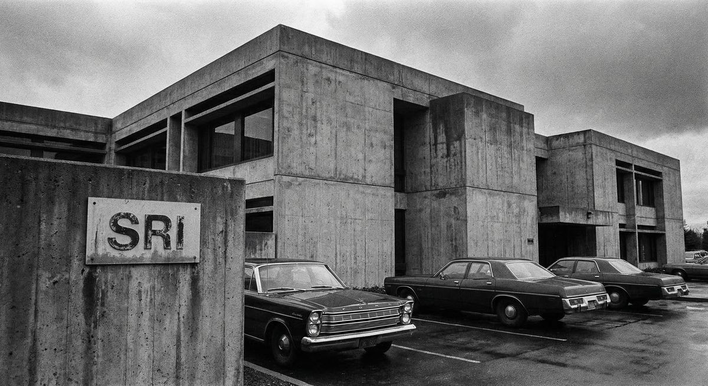
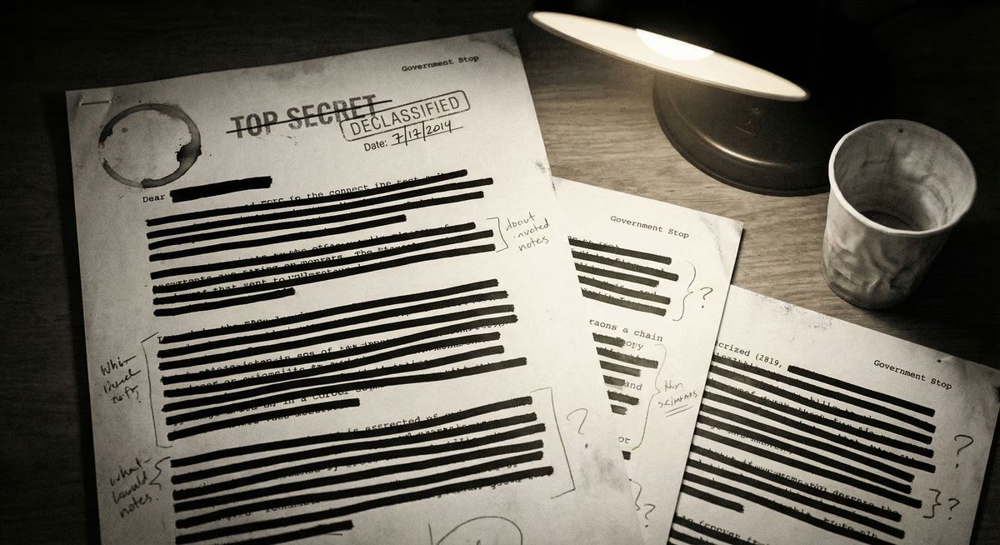
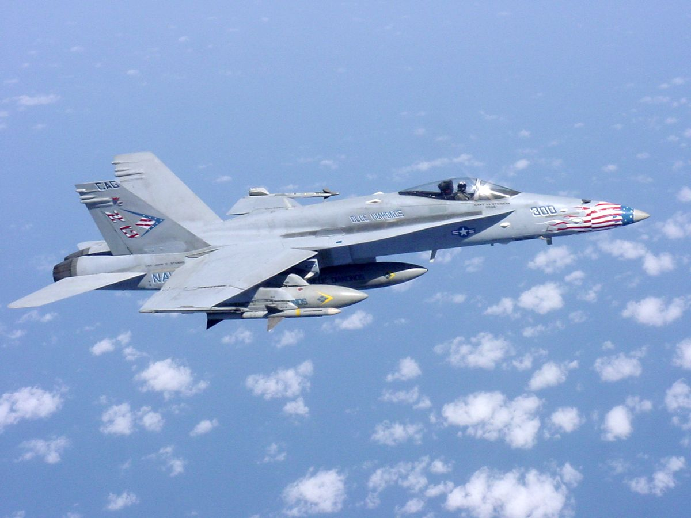
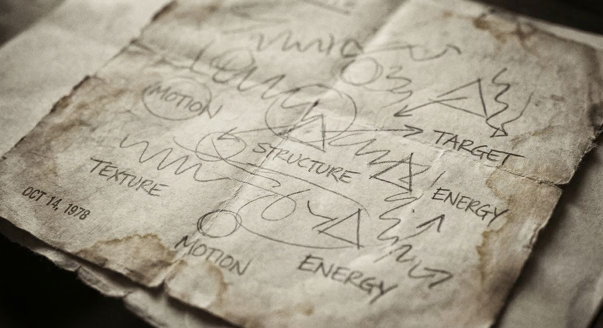
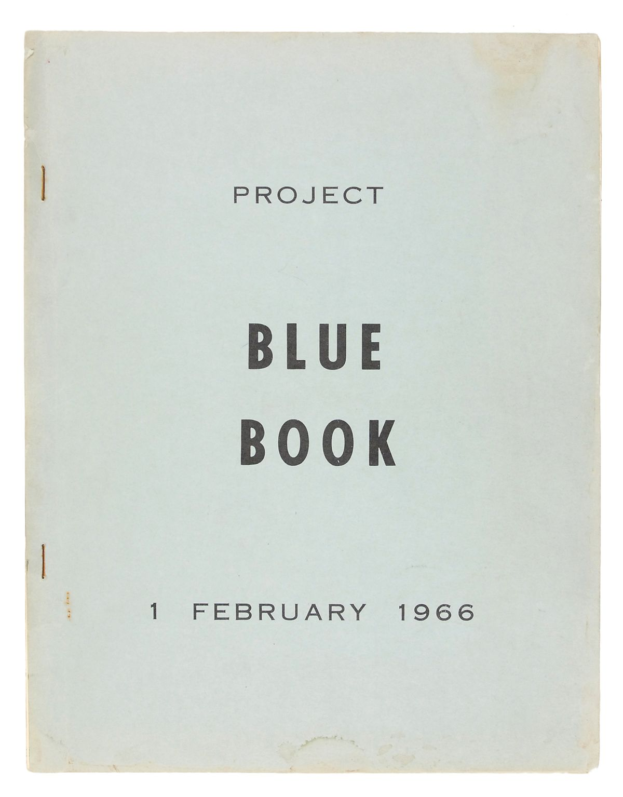
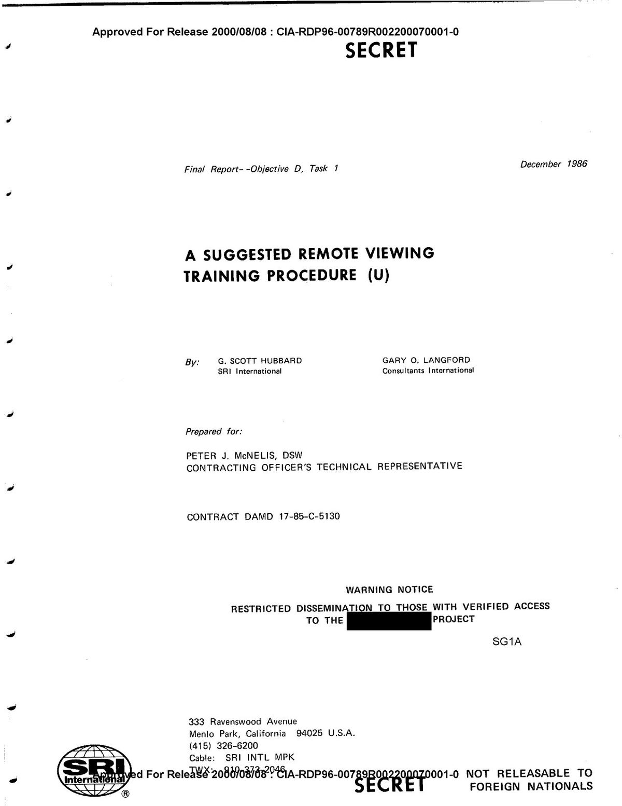
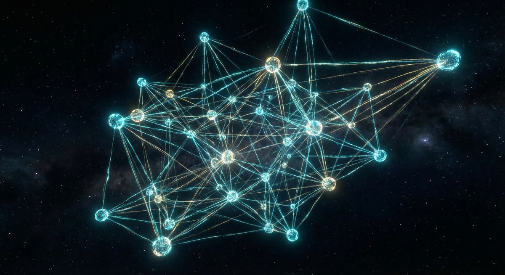
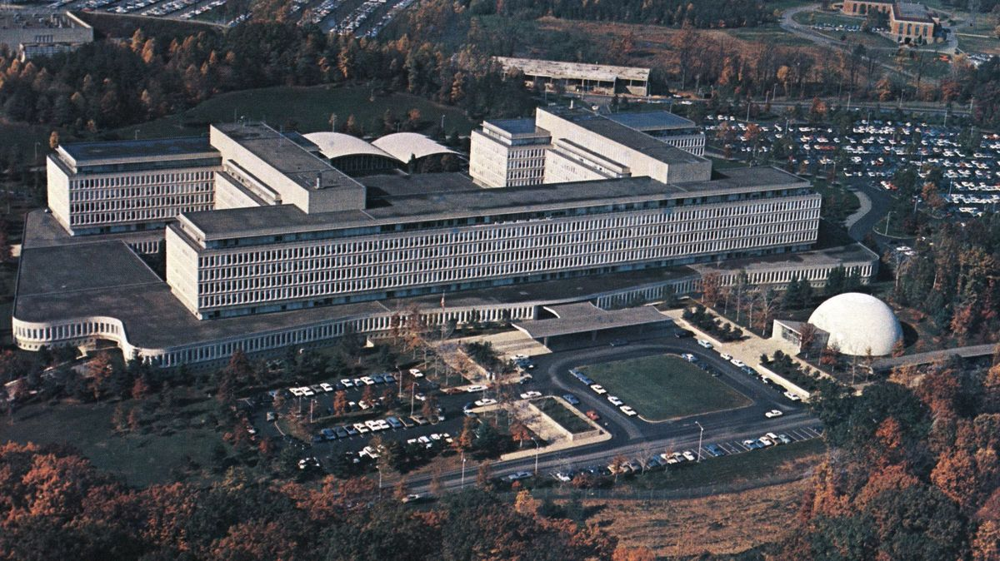
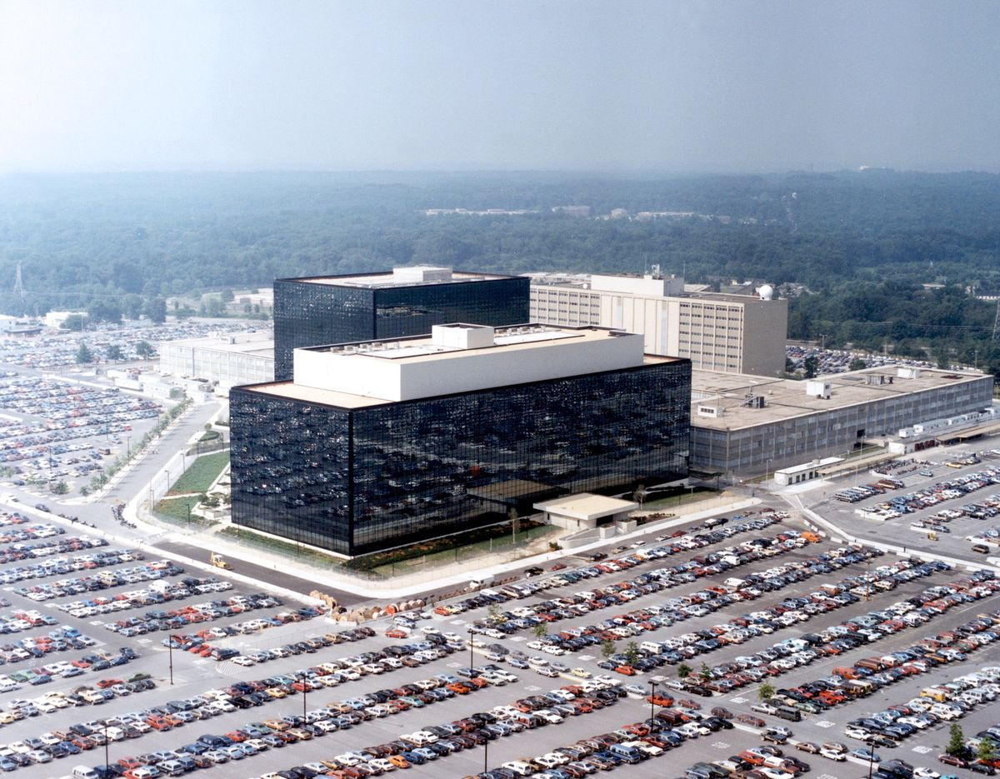

The Telepathy Tapes: What Would Proof Actually Look Like?
The chart-topping podcast now has a documentary film. Millions believe it, skeptics call it facilitated communication. The one test that would settle it, and why nobody has run it.
Remote Viewing Predictions Keep Going Viral. Prophecy Was Never the Skill.
YouTube viewers keep predicting wars, crashes, and the end of the world. The declassified STARGATE record shows the real skill was narrower, stranger, and far better documented.
Is Psychic Ability Written in Your DNA?
A viral claim says psychic ability is genetic, and the witch hunts culled it. There is a real study underneath the headline. What it found, what it did not, and what it means if you want the skill.
The Stanford Scientist Studying the Brains of People Who See the Unexplained
Garry Nolan found something unusual in the brains of people who report the anomalous. A credible, skeptic-first look at what the basal ganglia finding does and does not show.

The Nature Paper: How Remote Viewing Reached the World's Top Science Journal
In 1974, two physicists got remote viewing into Nature. The editors published it with a warning in the same issue. What the paper claimed, why it ran, and what the critics found six years later.

PURSUE UAP Files: Complete Release Tracker
Every batch tracked and analyzed. What the Pentagon has released, agency by agency, with links to full analysis of each tranche as it drops.
The Western United States Event: What AARO's Unresolved Case File Actually Says
AARO published its own analysis of the October 2023 orb sightings near a sensitive site. Radar explained about 60 percent as flares. A credibility-first look at the 40 percent the office still calls unresolved.

The USS Theodore Roosevelt Encounters: What GIMBAL and GO FAST Actually Show
Navy aircrew reported near-daily unidentified objects off the East Coast in 2015. A credibility-first look at the footage, the strongest skeptical explanations, and what remains unexplained.

Remote Viewing Training: A Structured Guide to Learning CRV
How the STARGATE program actually trained viewers -- and what that means for starting today. Protocol, progression, scoring, and what to expect in the first 25 sessions.

How to Contact Non-Human Intelligence: Protocols from the Declassified Record
What the government's own research programs say about directed consciousness and NHI contact. A survey of documented protocols, not speculation.
162 UAP Files: What the Pentagon Just Declassified and Why It Matters
The first PURSUE tranche: 162 records from four federal agencies, spanning 1947 to 2024. Military footage, NASA anomalies, FBI cases. Here's what's actually in them.
NASA's Files in PURSUE: Apollo Anomalies and a Space Agency's Quiet Shift
From Gemini 7's 1965 bogey report to Apollo 12's unexplained light flashes — the NASA records inside PURSUE document a pattern the agency spent decades not discussing.

Seven Federal Agents and 56 FBI Files: What the Bureau's PURSUE Records Actually Show
The FBI contributed the second-largest tranche to PURSUE. Seven agents filed Form 302 reports on a single 2023 event. The nuclear facility pattern spans 75 years. Here's the full picture.
From Military Intelligence to Monroe Institute: Skip Atwater's Remote Viewing Journey
Skip Atwater trained Army remote viewers for 10 years, then became president of Monroe Institute. His career path is a roadmap to what actually works.

We Fed the CIA's Remote Viewing Training Manual to AI — Here's What We Found
CIA-RDP96-00789R002200070001-0 is an 86-page SECRET training protocol from 1986. We analyzed every page. The findings change how you should train.
Project STARGATE: The CIA's $20 Million Psychic Spy Program
How a 23-year classified program at Stanford Research Institute proved that human consciousness can access information beyond normal sensory range.
Controlled Remote Viewing: The Complete Guide
The structured, stage-based protocol developed by Ingo Swann and Hal Puthoff — and how to train it systematically.
What Is a Psionic Asset? The Government's Term for Trained Remote Viewers
Inside the intelligence community's framework for developing, classifying, and deploying individuals trained in anomalous cognition.
UAP Contact Protocols: Directed Consciousness and Non-Human Intelligence
The intersection of CRV, CE-5 protocols, and government UAP research — and what the declassified record says about consciousness and contact.

Best Remote Viewing Apps and Training Tools (2026)
What separates effective AI-scored, blind-protocol platforms from basic target-guessing apps.
Ingo Swann: The Man Who Trained the CIA's Psychic Spies
How a New York artist became the architect of Controlled Remote Viewing and changed the course of government psi research.
The McMinnville Photographs: America's Most Credible UFO Evidence
The 1950 Oregon farmland photographs that convinced the US Air Force's own scientists they were genuine — and what happened next.
The USS Nimitz Encounter: When the Navy Confirmed UAP Are Real
The 2004 incident that changed everything — radar tracks, FLIR footage, and pilot testimony that the Pentagon eventually admitted was authentic.
What Pat Price Saw: The CIA Session That Changed Everything
The target was a location in the Soviet Union the CIA had codenamed PNUTS: a suspected underground nuclear testing facility near Semipalatinsk, in what is now Kazakhstan.

The Statistics the CIA Chose Not to Announce
The official story of Project Stargate ends in 1995 with a CIA review that determined remote viewing had not been proven to work.
Ingo Swann's Jupiter Problem
Ingo Swann coined the term "remote viewing," developed the coordinate-based protocol that became the foundation of the Stargate program, and was, as a viewer, genuinely unusual in ways the SRI researchers found difficult to categorize.

89,901 Pages: What's Actually in the Stargate Documents
When the CIA released the CREST database in January 2017, the resulting coverage mostly followed one of two tracks: either it was a story about government credulity — tax money spent on psychics — or it was a story about suppressed proof of paranormal phenomena.

The Legion of Merit Nobody Talks About
Almost every article about Project Stargate eventually notes that the CIA terminated the program in 1995 after concluding it had never produced useful intelligence.
Cold War Psychics: Why the Pentagon Had No Choice
Understanding why Stargate existed requires understanding the environment in which it was created.
The Dogwhistle Experiments: Inside Skywatcher's UAP Contact Program
The standard arc of psionic research in the United States runs from government program to termination to quiet continuation by former participants.